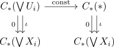
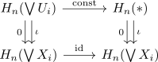
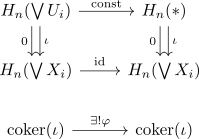

reduced singular homology and wedge product
Proposition
Let $(X_i,x_i)$ be based spaces, which admit a pointed contractible neighbourhood $U_i$ of $x_i$, and $\tilde{H}_n$ the reduced singular homology, then it holds for the wedge product
Proof
By definition it holds, that
Then for each $i \in I$, let $U \coloneqq \bigvee U_i$ be the wedge product. It is open by definition of the quotient topology and furthermore by wedge product of pointed contractible spaces as contractible space the chain map $\mathrm{const}: C_*(\bigvee U_i) \rightarrow C_*(*)$ is a quasi-isomorphism (cf. singular homology as homotopy invariant functor)

Then applying the homology functor results in a commutative diagram

(trust me ?, as simplices in $\wedge U_i$ are sent to 0) Here $\mathrm{const}$ is an isomorphism, as the constant map is part of a homotopy equivalence.
Hence it follows, that their cokernels are naturally isomorphic (cf. colim functor, isomorphisms under functors)

Therefore we get
using excision theorem for $*$ gives
and the homeomorphism
(cf. subspace of wedge product without point as coproduct) gives
applying singular homology preserves coproducts gives
again by excision, we get
and again by similar reasoning for the cokernel
TODO